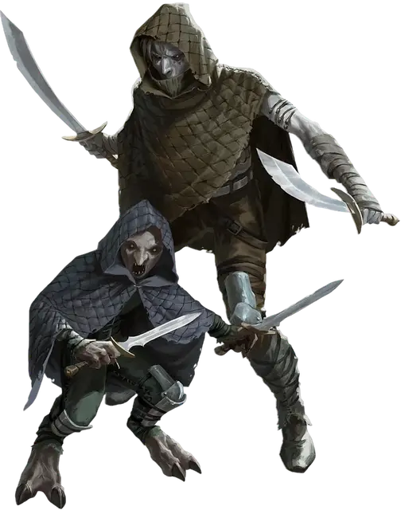

Старейшина дарклингов
Darkling Elder
Средняя Фея, обычно хаотично-нейтральная

Класс Доспеха 15 (доспех из клепаной кожи)
Хиты 27 (5к8 + 5)
Скорость 30 футов
| мод | спас | ||
|---|---|---|---|
| СИЛ | 13 | +1 | +1 |
| ЛОВ | 17 | +3 | +3 |
| ТЕЛ | 12 | +1 | +1 |
| мод | спас | ||
|---|---|---|---|
| ИНТ | 10 | +0 | +0 |
| МДР | 14 | +2 | +2 |
| ХАР | 13 | +1 | +1 |
Навыки Акробатика +5, Восприятие +6, Обман +3, Скрытность +7
Чувства слепое зрение 30 футов, тёмное зрение 120 футов, пассивное Восприятие 16
Языки Сильван, Эльфийский
Опасность 2 (450 опыта)
Бонус мастерства +2
Среда обитания Болото, Город, Лес, Подземье
Особенности
Ожог смерти. . Когда старейшина дарклингов умирает, магический свет испускается из него в радиусе 10 футов, пока его тело и пожитки, кроме металлических или магических предметов, сгорают дотла. Любое существо в этой области должно пройти спасбросок Телосложения Сл 11. При провале существо получает 7 (2к6) урона излучением, и становится ослеплённым до конца своего следующего хода. Если спасбросок был успешным, то существо получает половину этого урона и не слепнет.
Действия
Мультиатака. Старейшина дарклингов совершает две атаки Скимитаром.
Скимитар. . Рукопашная атака оружием: +5 к попаданию, досягаемость 5 футов, одна цель. Попадание: 6 (1к6 + 3) рубящего урона плюс 7 (2к6) урона некротической энергией.
Тьма (Перезаряжается после короткого или продолжительного отдыха). . Старейшина дарклингов накладывает заклинание тьма [darkness] без использования компонентов и используя Мудрость в качестве базовой характеристики.
Описание
Старейшина дарклингов
Мудрый и уважаемый дарклинг может отобраться и пройти ритуал, чтобы стать старейшиной. Другие старейшины отмечают просителя мерцающими татуировками, чтобы вывести поглощенный дарклингом свет из его тела. Если ритуал успешен, то дарклинг принимает высокую и красивую форму, похожую на серокожего эльфа. Дарклинг гибнет при провале ритуала.
Дарклинги
Древние легенды рассказывают о фее Благого Двора, который предал Королеву Лета. Его настоящее имя было вычеркнуто из истории, но в рассказах его называют Даб Катха («Темный Ворон» на Всеобщем). Гнев Королевы Лета был так велик, что она прокляла каждого члена его дома. Другие феи называют потомков дома Даб Катха – даб ситх, или на Всеобщем, «дарклинги». Дарклинги очень часто селятся в изолированных пещерах и покоях под городами других существ. Из таких анклавов они тихо предлагают свои услуги в качестве воров и убийц.